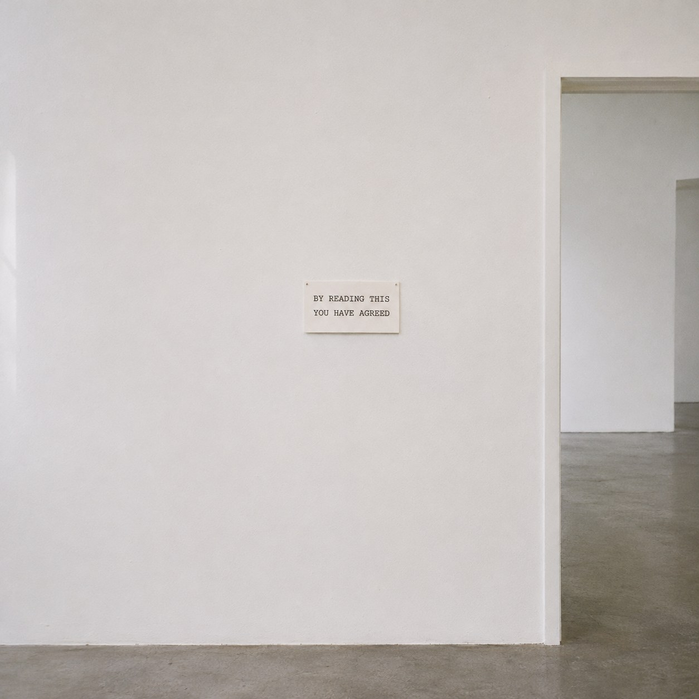
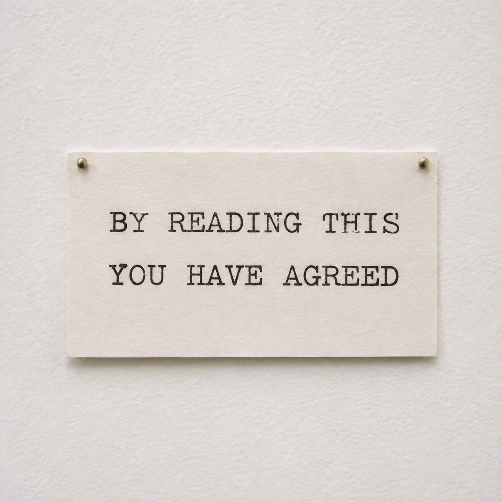

Already Agreed


An agreement usually comes in two parts. First you read the terms, then you say yes. The space between the two is where your freedom lives. You can stop reading. You can put down the pen. You can walk away.
This one has no space in it. The card says that by reading it you have agreed, and it says nothing else. There are no terms. By the time you know there is a contract, you have already signed it with your eyes.
Could you refuse? Only by not reading. But you can only know to refuse by reading. The no always arrives one sentence too late.
Adrian Piper set out desks where visitors could sign a contract with themselves, a promise to live by a simple rule, and their names were kept in a registry. That yes was slow and chosen. Tino Sehgal sells his works by spoken contract, with no paper at all, so the agreement lives only in the people who made it. This contract is the opposite. It is all paper, and no one made it but the reader.
Most of our yeses now look like this. A box ticked under a page no one opened. We agree all day long, and we rarely find out to what.
You have agreed to nothing. You cannot take it back.